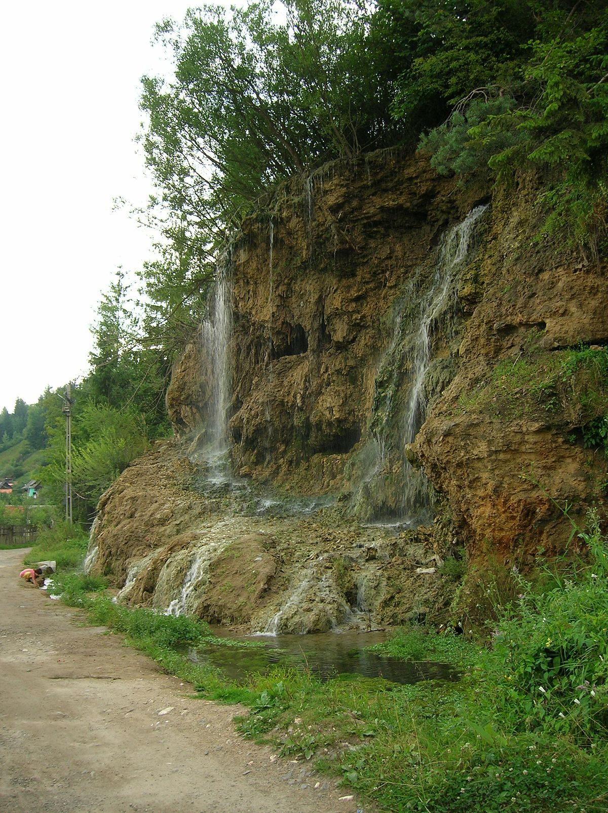

Apa - Gaz - Canalizare | Distribuitor Valrom -
 Meniu Fose septice Statii epurare Separatoare grasimi Separator hidrocarburi Cabina si teava put Rezervoare apa potabila Statii dedurizare si tratare Filtrare apa Statii osmoza inversa Aquapur Camine canalizare Camine apometru Canalizare interioara PP Teava apa interior Teava si Fitinguri Pex Teava si Fitinguri Pexal Teava si Fitinguri PPR Teava apa exterior Teava si Fitinguri Gaz Teava si Fitinguri PVC Promotii Contact Fose septice Statii epurare Separatoare grasimi Separator hidrocarburi Cabina si teava put Rezervoare apa potabila Statii dedurizare si tratare Filtrare apa Statii osmoza inversa Aquapur Camine canalizare Camine apometru Canalizare interioara PP Teava apa interior Teava si Fitinguri Pex Teava si Fitinguri Pexal Teava si Fitinguri PPR Teava apa exterior Teava si Fitinguri Gaz Teava si Fitinguri PVC Promotii Contact 0 My Cart 0.00 Lei Finalizare Comanda
Meniu Fose septice Statii epurare Separatoare grasimi Separator hidrocarburi Cabina si teava put Rezervoare apa potabila Statii dedurizare si tratare Filtrare apa Statii osmoza inversa Aquapur Camine canalizare Camine apometru Canalizare interioara PP Teava apa interior Teava si Fitinguri Pex Teava si Fitinguri Pexal Teava si Fitinguri PPR Teava apa exterior Teava si Fitinguri Gaz Teava si Fitinguri PVC Promotii Contact Fose septice Statii epurare Separatoare grasimi Separator hidrocarburi Cabina si teava put Rezervoare apa potabila Statii dedurizare si tratare Filtrare apa Statii osmoza inversa Aquapur Camine canalizare Camine apometru Canalizare interioara PP Teava apa interior Teava si Fitinguri Pex Teava si Fitinguri Pexal Teava si Fitinguri PPR Teava apa exterior Teava si Fitinguri Gaz Teava si Fitinguri PVC Promotii Contact 0 My Cart 0.00 Lei Finalizare Comanda
Vezi toate produsele!
Nou!
Separatoare grasimi, hidrocarburi si cabine put DetaliiPromotii
Vezi toate produsele in oferta! DetaliiPardoseala
Incazire in pardoseala preturi! DetaliiKit irigare prin picurare gradina 150 mp reductor presiune
Promotii Kit irigare prin picurare gradina 150 mp reductor presiune acum la promotie! Cel mai bun pret online. Livrare in toata Romania. Avantaje si beneficii kit irigare prin picurare Irigarea prin picurare Vezi Detalii 130LeiKit irigare prin picurare gradina 150 mp filtru
Promotii Kit irigare prin picurare gradina 150 mp filtru acum la promotie! Cel mai bun pret online. Livrare in toata Romania. Avantaje si beneficii kit irigare prin picurare Irigarea prin picurare ajuta ca ap Vezi Detalii 130LeiStatie dedurizare SOFT 25 CAB LOTUS Q=2,0mc/h sare 62KG
Promotii Statie dedurizare SOFT 25 CAB LOTUS Q=2,0mc/h sare 62KG Valrom cu by-pass acum la cel mai bun pret online. Produsa in Romania. Calitate premium. COD: AQUA09110025021 Avantaje si beneficii statie dedur Vezi Detalii 3,330LeiStatie dedurizare SOFT 12,5 CAB LOTUS Q=1mc/h sare 24KG
Promotii Statie dedurizare SOFT 12,5 CAB LOTUS Q=1mc/h sare 24KG Valrom cu by-pass acum la cel mai bun pret online. Produsa in Romania. Calitate premium. COD: AQUA09110012010 Avantaje si beneficii statie dedur Vezi Detalii 2,870LeiStatie dedurizare SOFT 10 simplex Q=0,8mc/h sare 28KG
Promotii STATIE DEDURIZARE SOFT 10 SIMPLEX Q=0,8mc/h SARE 28KG (CU BY-PASS) Vezi Detalii 1,680LeiStatie dedurizare SOFT 18 simplex Q=1.5mc/h sare 80KG
Promotii STATIE DEDURIZARE SOFT 18 SIMPLEX Q=1.5mc/h SARE 80KG (CU BY-PASS) Vezi Detalii 1,770LeiStatie dedurizare SOFT 25 simplex Q=2,0mc/h sare 80KG
Promotii STATIE DEDURIZARE SOFT 25 SIMPLEX Q=2,0mc/h SARE 80KG (CU BY-PASS) Vezi Detalii 1,910LeiStatie dedurizare deferizare MIX 50 Simplex Q=1,8mc/h sare 80KG
Promotii STATIE TRATARE MIX 50 SIMPLEX Q=1,8mc/h SARE 80KG (CU BY-PASS) Vezi Detalii 4,543LeiStatie dedurizare deferizare MIX 37 Simplex Q=1,4mc/h sare 80KG
Promotii STATIE TRATARE MIX 37 SIMPLEX Q=1,4mc/h SARE 80KG (CU BY-PASS) Vezi Detalii 3,980LeiStatie dedurizare deferizare MIX 25 CAB Q=1,2mc/h sare 62KG
Promotii STATIE TRATARE MIX 25 CAB Q=1,2mc/h SARE 62KG (CU BY-PASS) Vezi Detalii 3,480LeiStatie dedurizare SOFT 50 simplex Q=3,0mc/h sare 80KG
Promotii STATIE DEDURIZARE SOFT 50 SIMPLEX Q=3,0mc/h SARE 80KG (CU BY-PASS) Vezi Detalii 3,680LeiStatie dedurizare SOFT 37 simplex Q=2,5mc/h sare 80KG
Promotii Statie dedurizare SOFT 37 simplex Q=2,5mc/h sare 80KG Valrom (cu by-pass) acum la cel mai bun pret online. Produsa in Romania. Calitate premium. COD: AQUA09110037025 Avantaje si beneficii statie dedur Vezi Detalii 3,317LeiStatie dedurizare SOFT 25 CAB Q=2,0mc/h sare 62KG
Promotii STATIE DEDURIZARE SOFT 25 CAB Q=2,0mc/h SARE 62KG (CU BY-PASS) Vezi Detalii 2,575LeiStatie dedurizare SOFT 18 CAB Q=1,5mc/h sare 43KG
Promotii STATIE DEDURIZARE SOFT 18 CAB Q=1,5mc/h SARE 43KG (CU BY-PASS) Vezi Detalii 2,235LeiStatie dedurizare SOFT 10 CAB Q=0,8mc/h sare 23KG
Promotii STATIE DEDURIZARE SOFT 10 CAB Q=0,8mc/h SARE 23KG (CU BY-PASS) Vezi Detalii 2,100LeiStatie osmoza inversa cu mineralizare si pompa
Promotii STATIE OSMOZA INVERSA CU MINERALIZARE SI POMPA Vezi Detalii 945LeiStatie osmoza inversa cu mineralizare fara pompa
Promotii STATIE OSMOZA INVERSA CU MINERALIZARE FARA POMPA Vezi Detalii 700LeiDispozitiv electronic anticalcar-antirugina Calmat PLUS (38mm-76mm)
Promotii DISPOZITIV ELECTRONIC Calmat PLUS ANTICALCAR-ANTIRUGINA Dmin 1 1/2”-Dmax 3” Vezi Detalii 3,450LeiDispozitiv electronic anticalcar-antirugina Calmat (13 - 38mm)
Promotii DISPOZITIV ELECTRONIC Calmat ANTICALCAR-ANTIRUGINA Dmin 1/2″-Dmax 1 1/2” 13-38mm Vezi Detalii 1,200LeiStatie dezinfectie ultraviolete UV 412 AL 1x40W Q=2.7 MC/H
Promotii STATIE DEZINFECTIE ULTRAVIOLETE UV 412 AL 1x40W Q=2.7 MC/H Vezi Detalii 1,690LeiStatie dezinfectie ultraviolete UV 405 AL 1x30W Q=1.14 MC/H
Promotii STATIE DEZINFECTIE ULTRAVIOLETE UV 405 AL 1x30W Q=1.14 MC/H Vezi Detalii 1,425LeiHidrant interior racord 1C (2”) 550x650x200 mm
Teava apa interior CUTIE HIDRANT INTERIOR 540x650x200 CU 1C (2″) Vezi Detalii 638LeiCarcasa albastra filtru Big Blue 20" D 1"
Filtrare apa Carcasa albastra filtru Big Blue 20″ D 1″ Valrom la cel mai bun pret online. Calitate garantata. Utilizare: Se foloseste in aplicatii casnice sau rezidentiale pentru filtrarea apei potabil Vezi Detalii 265LeiSet 3 cartuse filtrante 10'' pentru PUR3 si statie osmoza inversa
Filtrare apa SET 3 CARTUSE FILTRANTE 10” pentru PUR3 Vezi Detalii 55.27LeiAlimentare cu Apa Exterior
Este un sistem complet, destinat realizarii retelelor de distributie a apei reci, retelelor si instalatiilor de irigatii si a retelelor antiincendiu, avand la baza tubulatura si fitingurile din polietilena de inalta densitate (PEHD).
Articole componente:
Tubulatura PEHD, fitinguri PEHD sudura cap-cap, ftinguri electrosudabile, fitinguri compresiune, robinete pentru apa, hidranti, apometre, aparate pentru sudura cap-cap, aparate sudura fitinguri electrosudabile, camine pentru protectie vane (cabina put), camine apometru.
Caracteristici generale ale tubulaturii PEHD apa:
Folosirea materiilor prime de inalta calitate, alaturi de utilizarea liniilor de extrudare de mare productivitate (moderne si specifice pentru aceste materiale), permite producerea constanta a tubulaturilor cu calitati tehnologice deosebite, cu urmatoarele rezultate:
- rezistenta optima la stress-cracking cu fiabilitate mare in timp a conductelor sub presiune;
- excelenta rezistenta chimica;
- protectie ridicata la raze UV, garantata de folosirea materiilor prime aditivate la origine cu negru de fum;
- siguranta totala si intr-o plaja larga a normativelor de atoxicitate nationale si internationale;
- insensibilitate la fenomenele de coroziune electrochimica;
- rezistenta buna la temperaturi mai scazute de -40ºC;
- mare flexibilitate;
- caracteristici hidraulice optime care se mentin constante in timp;
- rugozitate foarte scazuta, ceea ce face ca aceste tuburi sa intre in categoria tuburilor netede;
- masa scazuta;
- siguranta si simplitatea sistemelor de imbinare;
- inalta productivitate la montare.
Metode de îmbinare ale fitingurilor PE cu tuburile din PEHD:
prin sudare cap la cap, utilizând fitinguri de tipul teuri, coturi, reducţii, dopuri etc. utilizand aparate pentru sudura cap-cap;
prin sudare cu fitinguri electrosudabile de tipul manșoane (mufe), teuri, coturi, reducții, dopuri, prize cu/fără colier (teuri de branșament), actiune ce se poate realiza cu ajutorul aparatului de sudura fitinguri electrosudabile;
prin îmbinări cu flanșe;
prin prindere mecanica, cu ajutorul fitingurilor de compresiune.
Cabina put / protectie vane
Sunt utilizate pentru protectia vanelor de alimentare apa, vane gaz cat si a robinetilor sertar pana.
Realizate monobloc din polietilena.
Dotate cu sistem de inchidere. Acesta constă din două încuietori dispuse diametral opus pe capac si o cheie de actionare.
Etansarea tevilor ce traverseaza peretii sau baza cabinelor se poate face cu garnituri.
Camine apometru
Căminele sunt destinate realizării branşamentelor individuale la reţeaua de alimentare cu apă si au rolul de a proteja instalaţia si apometrul.
Se montează îngropat, în zone la care adâncimea de ingheţ este mai mică sau egală cu 0,8m, respectiv 1,2m.
Căminul de apometru se amplasează in zone fără trafic, spaţiu verde, în zone de clasă maxim B125 – 12.5 tone (conform EN 124). Căminul nu este proiectat să reziste la sarcini din trafic.
Căminele sunt realizate din polietilenă. Sunt obţinute prin procedeul de formare rotaţională (rotomolding).
Se realizează cu perete dublustrat:
- stratul exterior din polietilenă compactă (de culoare gri, colorat in masă);
- stratul interior din polietilena expandată (de culoare albă, cu rol termoizolator), capacul de acoperire dublustrat înglobează etanş o pernă de aer cu rol termoizolator ce fereşte instalaţia de pericolul de îngheţ..
Se realizează cu perete monostrat, respectiv un strat din polietilenă compactă. Căminele monostrat cu instalaţie au prevăzută la interior izolaţie termică PE2000.
La căminele monostrat fără instalaţie trebuie realizată izolarea termică.
Construcţia monobloc a căminului si soluţia de etanşare a trecerilor (garniturile de cauciuc la capac si la trecererile prin pereţi) fac imposibilă infiltrarea apei. Etanşările se realizează cu garnituri de cauciuc din EPDM.
Peretele căminului are geometrie ranforsată cu nervuri orizontale şi verticale pentru rigidizare mecanică.
Click aici sa vezi toata gama de produse pentru Alimentare cu Apa Exterior
Alimentare cu Apa Interior
Teava si fitinguri pex
Teava si fitinguri pexal
Teava si fitinguri PPR
Descriere gama pex:
Este un sistem complet, destinat instalatiilor de alimentare cu apa rece si calda cat si pentru cele de incalzire.
Este folosit in locuinte familiale, institutii publice si constructii industriale.
Articole componente gama pex:
Tub Pex, simplu si cu bariera de oxigen, dispozitiv derulare teava, trusa expandare – translatie, scule de montaj, pentru punere in opera, kituri amestec, distribuitori, colectori, casete distribuitori, colectori, automatizari, banda perimetrala autoadeziva, folie hidroizolatie, curbe conducatoare, tub flexibil protectie, profil T pentru rosturi dilatatie, banda pentru rosturi dilatare, aditiv sapa, placa polistiren cu nuturi, dispozitive de taiat teava.
Descriere gama pexal:
Este un sistem complet, utilizat pentru realizarea:
Retele interioare de distributie a apei potabile;
Retele interioare de distributie a apei calde menajere;
Sisteme de incalzire (circuite pentru calorifere);
Conditionare si transport aer comprimat.
Este utilizat in alimentarea cu apa din interiorul cladirilor. Exemple: case individuale, hoteluri, hale industriale etc.
Fitingurile pexal se monteaza pe teava prin strangere mecanica.
Articole componente gama pexal:
Teava multistrat pexal simpla, teava multistrat pexal izolata, tuburi izolatie, dispozitive de taiat, colectori, casete colectori, bride fixare.
Descriere gama PPR:
Este un sistem complet, utilizat pentru realizarea, atat a retelelor interioare de distributie a apei potabile si a apei calde menajere, cat si a sistemelor de incalzire.
Articole componente gama PPR:
Teava PPR simpla alba, verde sau gri;
Teava PPR fibra compozit alba, verde sau gri;
Fitinguri PPR de culoare alba, verde sau gri;
Aparate de sudura;
Dispozitive de taiat teava.
Click aici sa vezi toata gama de produse pentru Alimentare cu Apa Interior
Aquapur:
Rezervoarele si sistemele aquaPur® sunt articole inovative produse in Romania de firma Valrom Industrie.
Rezervor aquaPur® Valrom triplustrat.
Rezervorul este construit monobloc (fãrã îmbinãri) pentru a asigura etanşeitatea şi reduce riscul de scurgere. Este realizat din 3 straturi distincte:
strat exterior din polietilenã pentru rezistenţã mecanicã bunã;
strat intermediar din polietilenã expandatã ce are rolul de a reduce formarea condensului pe suprafață (termoizolație);
strat interior din polietilenã care înglobează compuși anorganici cu ioni de argint pentru a bloca dezvoltarea microorganismelor.
Sistemul AquaPur® îndeplineşte 5 funcţionalitãţi:
1. Rezervor tampon
În funcţie de capacitatea aleasã, AquaPur® asigurã un volum tampon de apã de 300, 500 sau 750 litri. Aceastã cantitate asigurã consumul pentru perioadele în care furnizarea apei este opritã sau reduce numãrul de porniri din alimentare ale pompei . Dimensionarea se face ţinând cont cã, în medie, o persoanã consumã zilnic cca 150 litri de apã. Acest volum trebuie mãrit dacã folosiţi apa din rezervorul tampon si pentru alte activitãţi (udarea grãdinii etc).
2. Comanda sursei de alimentare (reţea sau pompã)
AquaPur®poate fi racordat la o reţea de apã sau la un puţ. Pentru alimentarea la reţea, comanda de închidere/deschidere a admisiei se face cu un plutitor mecanic. Dacã nivelul apei scade sub nivelul minim, plutitorul deschide si închide când s–a ajuns la nivelul maxim. Dacã sursa de apã este un puţ, pe partea de intrare se va adãuga un dispozitiv automat de comandã (49060100123 - Dispozitiv electronic comanda pompe Brio 2000MT). Controlerul automatizeazã comanda pompei din puţ prin detectarea scãderii de presiune din reţea (plutitor deschis, nivel apã sub cel minim). Pompa este pornitã, nivelul apei creşte pânã când plutitorul închide. Controlerul sesizeazã presiunea maximã din reţea si opreşte pompa.
3. Furnizarea apei de consum (înlocuieşte hidroforul)
AquaPur® este echipat cu pompã submersibilã (furnizarea apei în reţeaua de consum si menţinerea automatã a presiunii) prin intemediul unei pompe submersibile. Pompa are integrat un dispozitiv electronic de comandã automatã pentru pornire si oprire. În momentul în care este detectatã o scãdere de presiune (un robinet deshis) pompa porneşte automat si menţine instalaţia sub presiune (va livra apa necesarã în orice punct din reţea). Când înceteazã consumul presiunea creşte si pompa se opreşte automat.
4. Filtrarea mecanicã, biologicã & chimicã (nanofiltrarea)
Pentru a asigura calitatea apei este disponibil un sistem de filtrare în 2 trepte: prima mecanicã si a doua biologicã & chimicã. Filtrarea mecanicã se face pe admisie (la intrarea în rezervor) si îndepãrteazã reziduurile mecanice. Staţionarea în rezervor, datoritã sedimentãrii, ajutã la clarificarea suplimentarã a apei.
5. Protecţia- Efect antimicrobian
Capacitatea argintului de a inhiba dezvoltarea microorganismelor este cunoscutã din antichitate, fiind folosit pentru a asigura potabilitatea apei. Agentul activ este un amestec de compuşi anorganici pe bazã de Ag înglobat în masa de material. În prezenţa apei, ionii de argint sunt eliberaţi lent şi inhibã dezvoltarea microorganismelor interferând cu mecanismele celulare responsabile de multiplicare. Tehnologia cu argint activ prezintã un dublu efect: inhibã dezvoltarea microoganismelor pe suprafaţa rezervorului si pãstreazã potabilitatea mediului depozitat. Acţiunea se extinde asupra unei game foarte largi de microorganisme – peste 25 clase de bacterii, alge, ciuperci, mucegaiuri etc. Studiile efectuate în institute de specialitate (Institutul Cantacuzino, Bucureşti; Hygiene Institut des Ruhrgebiets Trink und Badewasserhygiene, Gelsenkirchen, Germania, Industrial Microbiological Services LTD, Stafford, Anglia) au demonstrat cã în primele 24 ore de la contact aquaPur® asigurã reducerea cu cca. 99,5% a culturilor de Staphylococcus Aureus, Pseudomonas Aeruginosa, Escherichia Coli si Legionella Pnuemophila.
Click aici sa vezi toata gama de produse Aquapur
Camine Apometru:
Căminele sunt destinate realizării branşamentelor individuale la reţeaua de alimentare cu apă si au rolul de a proteja instalaţia si apometrul;
Se montează îngropat, în zone la care adâncimea de ingheţ este mai mică sau egală cu 0,8;m, respectiv 1,2;m;
Căminul de apometru se amplasează in zone fără trafic, spaţiu verde, în zone de clasă maxim B125 – 12.5 tone (conform EN 124). Căminul nu este proiectat să reziste la sarcini din trafic;
Căminele sunt realizate din polietilenă. Sunt obţinute prin procedeul de formare rotaţională (rotomolding);
Se realizează cu perete dublustrat:
- stratul exterior din polietilenă compactă (de culoare gri, colorat in masă);
- stratul interior din polietilena expandată (de culoare albă, cu rol termoizolator), capacul de acoperire dublustrat înglobează etanş o pernă de aer cu rol termoizolator ce fereşte instalaţia de pericolul de îngheţ;
Se realizează cu perete monostrat, respectiv un strat din polietilenă compactă .Căminele monostrat cu instalaţie au prevăzută la interior izolaţie termică PE2000;
La căminele monostrat fără instalaţie trebuie realizată izolarea termică;
Construcţia monobloc a căminului si soluţia de etanşare a trecerilor (garniturile de cauciuc la capac si la trecererile prin pereţi) fac imposibilă infiltrarea apei. Etanşările se realizează cu garnituri de cauciuc din EPDM;
Peretele căminului are geometrie ranforsată cu nervuri orizontale şi verticale pentru rigidizare mecanică.
Gama foarte diversificata ce contine:
Camin apometru dublustrat fara capac, instalatie si contor;
Camin apometru eco cu capac, fara instalatie si contor;
Camin apometru dublustrat cu capac, fara instalatie si contor;
Camin apometru eco cu capac si instalatie, fara contor;
Camin apometru dublustrat cu capac si instalatie, fara contor;
Camin apometru eco complet echipate (cu capac, instalatie si contor);
Camin apometru dublustrat complet echipate (cu capac, instalatie si contor);
Click aici sa vezi toata gama de Camine Apometru
Camine Canalizare:
Caminele de vizitare sunt destinate utilizarii in sistemele de canalizare rurale sau urbane.
Deoarece acestea sunt produse monobloc, din polietilena, sunt solutia perfecta pentru protejarea mediului inconjurator pentru ca nu permit infiltrarea apelor menajere in sol.
In aceasta gama sunt incluse camine de vizitare pentru canalizare, caminele de racord / inspectie cat si accesoriile necesare pentru montajul acestora.
Caracteristici camine vizitare:
Căminele sunt produse din polietilenă de înaltă densitate prin procedeul de formare rotațională(rotomoulding);
Căminele de vizitare proiectate prezintă nervuri exterioare pentru rigidizare și au formă cilindrică cu diametrul 1100 mm și înălțimi de 800 ÷ 5480 mm.Accesul în cămin are 640 mm;
Căminele de vizitare sunt prevăzute cu mânere de prindere pentru a ușura manipularea și montarea lor și trepte de acces în interior pentru întreținere și exploatare. Prin construcția lor se asigură etanșarea, fiind o soluție pentru protejarea mediului înconjurător;
Căminele cu înălțimea de până la 2.8 m sunt monobloc și compacte, de culoarea portocalie, colorate în masă, iar cele cu înălțime între 3 și 5,48 m sunt construcții triplustrat, stratul exterior portocaliu;
Rezistent la montaj îngropat, nu se deformează, proprietate pe care o conferă forma geometrică ranforsată, nu necesitã lucrãri suplimentare precum cofraje, ramforsari metalice etc.;
Montajul subteran asigură protecţia caminului in cazuri de incendiu sau acte de vandalism;
Uşor de transportat şi asamblat deoarece este confectionat din polietilenã si are greutate micã în comparaţie cu variantele din beton. Nu necesitã echipamente speciale de ridicare;
Deoarece este realizat din polietilenã, pentru montajele subterane acest lucru poate compensa deplasãrile datorate cutremurelor sau mişcãrilor pãmântului;
Uşor de instalat: sunt disponibile echipamente suplimentare pentru ajustarea înãlţimii la nivelul solului şi pentru montarea în diferite clase de încãrcare: A, B sau C. In funcţie de necesitãţi, poate fi adaptatã pentru trafic carosabil sau necarosabil;
Instalarea este simplã iar amprenta pe sol şi spaţiul necesar sunt minime;
Este ecologic deoarece polietilena poate fi reciclatã la sfârşitul duratei de viaţã. Materialul reciclat poate fi folosit pentru fabricarea altor articole ajutând la protecţia mediului înconjurãtor;
Uşor de curãţat şi întreţinut deoarece tehnologia de fabricaţie produce suprafeţe netede, cu rugozitate micã. Astfel caminul este uşor de curãţat, nu faciliteazã depunerile, scurtând durata de curãţare şi micşorând consumul de apã;
Absolut insensibil la coroziune;
Datorita gurii de acces permite accesul uşor al unei persoane în interior şi asigurã spaţiu suficient pentru curãţare;
Deoarece este realizat monobloc acesta este etans si nu permite infiltrãri în sol. Îmbinãrile sunt în afara zonelor active iar acolo unde existã sunt fie sudate fie se pot etansa cu garnituri de cauciuc;
Se pot utiliza si pentru protectia si intretinerea vanelor ori a robinetilor de apa sau gaze;
Căminele de vizitare cu bază închisă se pot utiliza ca și cămine pentru apometru (cu condiția realizării pe interior a unui strat de izolație corespunzător), cămine pentru cabluri de telefonie, cămine de curățire și control, bazin recepție pentru stații de pompare, cămine pentru recoltare de probe.
Click aici sa vezi toata gama de Camine Canalizare
Canalizare interioara PP:
Este un sistem complet de canalizare interioara, destinat atat constructiilor civile cat si industriale.
Domenii de utilizare:
Tubulatura şi fitingurile de polipropilena Valrom pot fi utilizate la executarea următoarelor instalații din construcțile civile și industriale:
reteaua de canalizare interioară pentru evacuarea apelor menajere la temperaturi joase sau ridicate (maxim 90 °C);
conductele de ventilație naturală a instalației interioare de canalizare;
reteaua de canalizare ape pluviale din interiorul construcților.
Caracteristici articole componente:
Culoare: gri (RAL 7037), cu luciu superficial;
Stabilzate la UV;
Au suprafata interna si externa neteda, fara defecte, aspect ce implica o rezistenta foarte mica la scurgere. Lipsa rugozitatilor duce si la evitarea depunerilor;
Sunt prevazute cu garintura etansare;
Usurinta si rapiditate in procesul de montare;
Greutate redusa fata de alte materiale;
Costuri reduse cu transportul si punerea in opera;
Rezistenta si functionalitate pe termen lung;
Reactioneaza foarte bine fata de actiunea unei game variate de substante chimice;
Nu emana gaza toxice;
Teava si fitingurile au la capatul fara mufa un sanfren din fabricatie fapt ce usureaza montajul si protejeaza garnitura de cauciuc cu care se etanseaza.
Gama dimensionala: 32, 40, 50, 75, 110, 125 si 160 mm.
Gama canalizare interioara PP cuprinde:
Tuburi, conectori, reductii, ramificatii, coturi, curba si conector tehnic PP pentru masina spalat, conector dilatatie, conector PP – fonta, piese curatire, aeratoare, mansoane, dopuri, sifoane, bride de fixare si lubrifiant pentru mufe.
Recomandari de montare teava si fitinguri PP
Tipul de de conectare al componentelor sistemului este imbinarea cu mufa. Din acest motiv nu sunt necesare dispozitive sau unelte speciale. Mufarea este o operatie simple ce consta in introducerea extremitatii tevii in mufa unei alte tevii sau a unui fiting, etansarea fiind asigurata de garnitura inelara.
Pentru a asigura un bun montaj trebuiesc respectate cateva reguli simple:
Taierea tuburilor se face cu fierastrau cu dinti fini respectand obtinerea perpendicularitatii taieturii;
Extremitatea tubului trebuie debavurata si ajustata la un unghi aproximativ de 15° folosind un dispozitiv special sau o pila cu dinti fini. Suprafetele sanfrenate trebuie sa fie netede pentru a evita deteriorarea garniturii de etansare a mufei sau a fitingului ce va fi fixat;
Capatele fitingurilor nu trebuie taiate pentru a se evita o conectare nesigura;
Asigurati-va ca mufa este curata la interior, de acest lucru depinde siguranta etansarii;
Pentru montaj trebuie folosit lubrifiant de 150 gr / 250 gr sau apa cu sapun. NU se folosesc uleiuri sau grasimi minerale;
Evitati devierile excesive ale tevilor, in caz contrar garnitura nu va asigura etansarea;
Acoperiti imbinarile inainte de turnarea sapei, astfel aceasta nu patrunde in tub si nu deterioreaza garnitura;
Introduceti tuburile corect in mufe, tinand cont de posibilele dilatari. In cazul in care tubul nu este introdus suficient in mufa nu se asigura etansarea sau alinierea instalatiei ceea ce duce in timp la deplasari ale acesteia. Pe de alta parte tubul NU se introduce pe toata lungimea mufei de la teava sau fitingul urmator deoarece se impiedica dilatarea tevilor;
Pe trasee scurte (conectarea la obiectele sanitare din bai si bucatarii) conductele pot fi ingropate direct in sapa insa trebuiesc protejate cu hartie groasa sau carton ondulat pentru a se asigura spatiul necesar dilatarii mai ales in cazul trecerii fluidelor la temperaturi ridicate.
Click aici sa vezi toata gama de produse pentru Canalizare Interioara PP
Statii osmoza inversa:
Folosite pentru filtrarea apei din put cat si a apei din sistemul public de alimentare.
Principiu de functionare:
Osmoza inversa (RO) este procesul prin care, prin aplicarea unei presiuni, se forțează moleculele de solvent sa treacă printr-o membrana semipermeabila.
Ele trec de la soluția mai concentrata către cea diluata. Folosind osmoza inversa apa contaminata poate fi trecuta printr-o membrana.
Aceasta retine molecule cu dimensiuni mai mare decat ale apei.
Este astfel separata de agentii poluanți. Sistemele RO retin organismele si orice alta substanță cu exceptia apei in procent de 90-97%.
Stațiile de osmoza inversa aquaPUR cu mineralizare si sau fara pompa sunt formate din 6 trepte de filtrare.
Trepte filtrare:
Treapta 1 : filtrare mecanica si chimica, respectiv filtru de 10” echipat cu cartus din carbune activ bloc. Retine impuritatile mecanice, substanțele organice si clorul.
Treapta 2 : filtrare chimica, filtru de 10” echipat cu cartus din carbune activ granular.Retine substantele chimice organice si in special clorul.
Treapta 3 : filtrare mecanica, anume filtru de 10” echipat cu cartus de 1 μm din PP expandat. Retine suspensiile solide: nisip, rugina etc.
Nota : este importanta retinerea suspensiilor solide si indepartarea clorului din apa. Ambele sunt agresive fata de membrana de osmoza și ii scurtează durata de utilizare.
Treapta 4 : membrana osmoza inversa, este etapa de osmoza inversa propriu zisa in care este retinuta orice particula cu exceptia apei. Filtrarea se produce printr-o membrana de forma (multi) tubulara formata din mai multe straturi cu porozitate controlata depuse sub forma de film. Apa din alimentare curge prin exteriorul tubului, o parte este filtrate si colectata iar restul este evacuata.
Nota : din aceasta cauza nu toata apa din alimentare este colectata sub forma purificata. Randamentul este de cca 30-40% in functie de presiunea de alimentare.
Pentru a functiona sistemele de osmoza au nevoie de o presiune de alimentare minima de 3 bar. Daca aceasta nu este asigurata se va alege un sistem cu pompa.
Treapta 5 : postcartus cu carbune activ. Corectie finala a gustulului si mirosului apei.
Treapta 6 : (re)mineralizare. Dupa filtrare apa este aproape pura (peste 99,9%), fara saruri sau alte minerale. Pentru a putea fi consumata sunt adugate mici cantitati de minerale prin trecere printr-un cartus de remineralizare.
Nota : Organismul are nevoie de minerale - sodiu, potasiu, calciu, magneziu etc. Consumul de apa demineralizata este in continuare controversat.
Click aici sa vezi toata gama de Statii Ozmoza Inversa
Teava si Fitinguri Gaz:
Teava si fitinguri gaz reprezinta un sistem complet destinat alimentarii cu gaze. Are la baza tubulatura si fitinguri din polietilena de inalta densitate (PEHD)
Gama teava si fitinguri gaz cuprinde:
Teava gaz PEHD, fitinguri sudura cap-cap gaz PEHD, fitinguri electrosudabile, fitinguri tranzitie PEHD/OL, robineti gaz, vane gaz, aparate de sudura electrofitinguri, aparate de sudura cap-cap, camine protectie vana gaz, accesorii.
Descriere teava gaz SDR11:
Material: PE100
Standard referință: SR EN 1555-1:2011 si ISO 4437-1:2014.
Utilizare: tevile din PE100 SDR11 se utilizeaza in retele exterioare de transport gaze naturale cu presiunea maxima de utilizarea MOP=10 bari (temperatura de referinta 20°C). Se monteaza ingropat in pamant.
Fabricatie: Tevile GasKIT PE100 SDR11 sunt realizate prin extrudare si prezinta dungi de marcare obtinute prin coextrudare.
Aspect: cand sunt examinate cu ochiul liber (fara instrumente de marire) suprafata exterioara si interioara trebuie sa fie neteda, curata, fara muchii ascutite, pori, bavuri
sau defecte de suprafata care pot afecta performantele produsului. Capetele tevilor sunt taiate perpendicular pe axa tevii.
Culoare: Tevile sunt de culoare neagra si au dungi, coextrudate longitudinal, de culoare galbena.
Metode de îmbinare ale fitingurilor PE cu tuburile din PEHD:
prin sudare cap la cap, utilizând fitinguri de tipul teuri, coturi, reducţii, dopuri etc. utilizand aparate pentru sudura cap-cap;
prin sudare cu fitinguri electrosudabile de tipul manșoane (mufe), teuri, coturi, reducții, dopuri, prize cu/fără colier (teuri de branșament), actiune ce se poate realiza cu ajutorul aparatului de sudura fitinguri electrosudabile;
prin îmbinări cu flanșe.
Cabina put / protectie vane
Sunt utilizate pentru protectia vanelor de alimentare apa, vane gaz cat si a robinetilor sertar pana.
Realizate monobloc din polietilena.
Dotate cu sistem de inchidere. Acesta constă din două încuietori dispuse diametral opus pe capac si o cheie de actionare.
Etansarea tevilor ce traverseaza peretii sau baza cabinelor se poate face cu garnituri.
Click aici sa vezi toata gama de produse Teava si Fitinguri Gaz
Teava si Fitinguri PVC:
Sistem complet , destinat realizarii sistemelor de canalizare exterioara gravitationala, fara presiune. Este compus in principal din teava si fitinguri PVC.
Articole componente:
Teava PVC SN2, SN4 si SN8, mufe PVC, curbe PVC, ramificatii PVC, piesa PVC de trecere prin beton, sa bransament PVC, tub drenaj, membrana geotextil.
Descriere si caracteristici teava si fitinguri PVC:
Culoarea tevilor este brun-portocaliu.
Este un articol utilizat in sistemul de canalizare exterioara ingropata;
Au suprafata interna si externa neteda, fara defecte, aspect ce implica o rezistenta foarte mica la scurgere. Lipsa rugozitatilor duce si la evitarea depunerilor;
Sunt prevazute cu garnitura de etansare, datorita careia se realizeaza o compensare mai usoara a dilatarilor; aceasta etansare elimina si riscul de poluare a terenului si a apei subterane;
Usurinta si rapiditate in procesul de montare;
Greutate redusa fata de alte materiale;
Costuri reduse cu transportul si punerea in opera;
Rezistenta si functionalitate pe termen lung;
Reactioneaza foarte bine fata de actiunea unei game variate de substante chimice;
Nu emana gaze toxice;
Izolatie fonica si termica ridicata;
Teava si fitingurile au la capatul fara mufa un sanfren din fabricatie fapt ce usureaza montajul si protejeaza garnitura de cauciuc cu care se etanseaza;
Standarde de fabricatie: SR EN 13476-1, SR EN 13476-2.
Durata de viata a tevilor din PVC este estimata la peste 50 de ani.
Camine vizitare, inspectie si racord
Pentru inspectarea, intretinerea si devierea traseelor formate de tevile si fitingurile de canalizare sunt utilizate camine.
Deoarece acestea sunt produse monobloc, din polietilena, sunt solutia perfecta pentru protejarea mediului inconjurator pentru ca nu permit infiltrarea apelor menajere in sol.
Click aici sa vezi toata gama de produse Teava si Fitinguri PVC
Cabina si teava put:
Cabina put protejeaza instalatia de alimentare cu apa potabila dintr-un put forat. Asigura protecția armăturilor cat si a hidroforului, vasului expansiune, filtrelor etc.. De asemenea, se poate folosi si pentru protectia vanelor de alimentare apa, vane gaz cat si a robinetilor sertar pana.
Tuburile din PVC SpringKit (tevile albastre de put) sunt destinate realizării puțurilor de captare a apei freatice, in vederea potabilizării, pentru uz industrial sau irigații.
Descriere cabine put:
Fabricata monobloc, din polietilena. Este dotata si cu sistem inchidere. Acesta constă din două încuietori dispuse diametral opus pe capac si o cheie de actionare.
Pentru conectarea tevi de put, cabina put Valrom este prevazuta la parte inferioara cu o suprafata circulara plata (coaxiala cu gura de acces). Aceasta ce are un diametru de 300 mm. In centrul acestei zone cabina put Valrom este prevazuta din fabricatie o gaura de 6 mm. Aceasta gaura a cabinei pe put ajuta la centrarea unui freze (care mai este denumita si carota). Cu acesata se poate executa un orificiu de maxim 250 mm prin care se poate trece cu teava de put.
Etansarea tevilor ce traverseaza peretii sau baza cabinelor se poate face cu garnituri.
Descriere teava put albastra:
Tuburile din PVC SpringKit sunt destinate realizării puțurilor de captare a apei freatice, în vederea potabilizării, pentru uz industrial sau irigații.
Tevile de tubare, țevile filtrante și accesoriile sunt fabricate în întregime din PVC neplastifiat (PVC-U).
Tuburile SpringKit corespund celor mai exigente cerințe de calitate din domeniu. Sunt eficiente din punct de vedere economic.
Rezistența chimică a tubulaturii din PVC-U este remarcabilă, țevile îngropate rezistă pe termen lung la apele freatice de toate categoriile, inclusiv apa de mare sau saramură și chiar la soluții diluate de acizi sau baze.
Utilizarea repetată a agenților de spălare sau de dezinfectare nu afectează stabilitatea chimică și implicit nici stabilitatea mecanică a tubulaturii îngropate.
PVC–U nu eliberează in apă compusi toxici, fiind unanim acceptat pentru utilizare în rețele de transport și distribuție a apei potabile.
Țevile de tubare se execută prin extrudare din PVC-U de culoare albastru RAL 5015.
Îmbinarea între țevi se realizează prin înfiletare.
Descriere filtru put forat:
Este utilizat in executarea puturilor de apa forate. Este un filtrul PVC pentru puturi ce are fante de pe toata lungimea tevi sau numai pe o anumita portiune.
Frezarea fantelor se execută pe o mașină specializată, fantele sunt în plan perpendicular pe generatoarea țevii, ceea ce asigură o valoare minimă a diminuării rezistenței țevii la presiune exterioară față de țeava neperforată, iar geometria lor este în conformitate cu standardul DIN 4925 .
Țevile filtrante se montează intercalate între țevi de tubare de același diametru și clasă de grosime, la adâncimea optimă pentru contactul cu stratul acvifer.
Click aici sa vezi toata gama de produse Cabina si Teava Put
Filtrare apa - Generalitati:
Cu ajutorul articolelor din gama se poate purifica apa provenita de la puturile forate, apa din fantana, apa de ploaie si nu numai. Impuritățile pe care le are apa ce o consumam zilnic provin din mediul din ce in ce mai poluat in care traim. Montajul si întreținerea lor este foarte ușoară, se poate executa chiar si de personal necalificat.
Componenta gama
Cartuse filtrante
Cartus antibacterian membrana UF 0,01-0,10 microni;
Cartus filtrant PP expandat 1, 5, 10 si 20 microni;
Cartus filtrant fir PP 1 micron 1, 5, 10 si 20 microni;
Cartus filtrant lavabil cu sita 50 microni;
Cartus filtrant carbune activ bloc;
Cartus filtrant carbune activ granular;
Cartus filtrant carbune activ granular antibacterian.
Carcase cartuse filtrante si accesorii pentru fixarea acestora.
Carcase transparente si albastre pentru cartuse filtrante;
Cheie pentru montat si demontat carcase filtre;
Suport si surub carcasa filtru;
Kit suport fixare carcasa filtru.
Sisteme aquapur (FSP filtrare - stocare - pompare)
Este un sistem inovativ ce include:
Filtrare – doua cartuse filtrante, respectiv filtru mecanic 5μ, montat pe intrarea în rezervor si filtru carbune activ bloc pe iesirea din rezervor.
Stocare – rezervor Aquapur realizate triplustrat.
Strat exterior din polietilena pentru rezistenţa mecanica buna;
Strat intermediar din polietilena expandata ce are rolul de a reduce formarea condensului pe suprafaţa (termoizolaţie);
Strat interior din polietilena care inglobeaza compuşi anorganici cu ioni de argint activ pentru a bloca dezvoltarea microorganismelor.
Pompare - este echipat cu pompa submersibila (furnizarea apei in reţeaua de consum si menţinerea automata a presiunii) prin intemediul unei pompe submersibile.
Click aici sa vezi toata gama de produse Filtrare Apa
Fose septice ecologice
O fosă este un bazin (de regulă subteran) in care se acumulează apa uzată provenită din locuinţă sau alte locatii neracodate la reteua de canalizare. Dacă bazinul este etanş (nu există infiltrări in sol) şi este vidanjat atunci se numeşte ecologic. Hotararea de guvern HG 352/2005, inlocuieşte termenul de fosă septică cu cel de bazin etanş vidanjabil. O fosă neecologică inseamnă că nu este etanşă si permite infiltrari in sol.
Domeniu de utilizare:
Fosele septice sunt folosite pentru a prelua apele reziduale din locatii ce nu sunt conectate la reteaua centralizata de canalizare sau zone unde aceasta retea lipseste. Putem enumera aici: grupuri sanitare pentru centre industriale sau comerciale izolate, campinguri, plaje, locuinte izolate, gari etc.
Volumul fosei septice depinde de cantitatea apelor uzate deversate si de numărul de utilizatori. De asemenea, volumul de stocare a noroiului și spumei depind de mijloacele de spălat utilizate, de frecvența vidanjărilor cat si de temperatura ambiantă.
Principiu de functionare:
In fosele septice, apele menajere se limpezesc parţial si apoi sunt evacuate in puţuri absorbante sau drenuri iar namolul depus pe fundul fosei fermenteaza timp indelungat (6 luni) transformandu-se din punct de vedere chimic pina la mineralizare prin acţiunea organismelor vii si este indepartat dupa acest interval prin vidanjare. Fosele septice degaja puternic gaze de mlaştini, amoniac (NH4), bioxid de carbon (CO2), hidrogen sulfurat (H2S) si foarte puţin metan (CH4), din acest motiv fiind necesara o aerisire eficace.
Descriere:
Sunt realizate monobloc, din polietilena;
Au o forma geometrica ranforsata ce le face rezistente la montaj ingropat;
Are toate componentele necesare pentru montaj, trebuie doar ingropate si conectate la canalizarea existenta;
Greutate mica, usor de transportat, manipulat si asigura un montaj facil;
Au o amprenta minima la sol;
Datorita suprafetelor netede se intretin usor, cu minim de efort si materiale de curatare;
Avand capace etanse nu degaja mirosuri neplacute;
Acces facil datorat gurilor de acces si spatiu suficient pentru inspectare si intretinere;
Datorita capacitatii mari de stocare a namolului necesita vidanjari mai rare;
Nu consuma curent, functionare gravitationala, fara automatizari;
In orice moment poate fi transformate in statii de epurare;
Ecologice deoarece nu permit infiltrari in sol.
Polietilena din care sunt confectionate poate fi reciclata la finalul duratei de viata si materialul astfel obtinut poat fi utilizat la realizarea altor articole, ajutand la protectia mediului in care traim.
Click aici sa vezi toata gama de Fose Septice
Rezervoare apa potabila
Se poate utiliza pentru apa potabila, cat si pentru lichide alimentare. De asemenea se poate folosi si pentru recuperarea apei de ploaie;
Capacitate mare de stocare a lichidelor;
Prevăzut cu capac etanş din polietilenă. Se evita astfel fenomenul de evaporare a apei cum e cazul rezervoarelor deschise, mai ales in cazul celor de dimensiuni mari;
Uşor de transportat şi asamblat deoarece este confecţionat din polietilenã si are greutate micã. Nu necesitã echipamente speciale de ridicare;
Ușor de montat. Este monobloc.
Instalarea este simplã iar amprenta pe sol şi spaţiul necesar sunt minime;
Este ecologic deoarece polietilena poate fi reciclatã la sfârşitul duratei de viaţã. Materialul reciclat poate fi folosit pentru fabricarea altor articole ajutând la protecţia mediului înconjurãtor;
Uşor de curãţat şi întreţinut deoarece tehnologia de fabricaţie produce suprafeţe netede, cu rugozitate micã si nu faciliteazã depunerile, scurtând durata de curãţare şi micşorând consumul de apã;
Absolut insensibil la coroziune;
Nu necesita nici un tratament suplimentar de impermeabilizare datorita faptului ca este produs din polietilena, material ce nu permite trecerea fluidelor;
Poate satisface orice proiect deoarece sunt produse intr-o gama foarte variata de forme si dimensiuni. Gama cuprinde capacitati cuprinse intre 300 si 6500 litri, cu montaj subteran sau suprateran.
Rezervorele supraterane au turnate din producție inserturi metalice. Acestea permit conectarea facila la rețeaua de alimentare cu apa;
Rezervoarele subterane sunt rezistente la montaj îngropat, nu se deformează, proprietate conferita de forma geometrică ranforsată. Rezistente la presiunea solului fara sa fie montate in incinte speciale pentru protectia acestora. In aceasta gama sunt disponibile echipamente suplimentare pentru ajustarea înãlţimii la nivelul solului şi pentru montarea în diferite clase de încãrcare (trafic): A, B sau C.
Rezervoarele Aquapur - Clasa premium
Acestea sunt tratate la interior cu ioni de argint ce inhiba dezvoltarea bacteriilor si asigura o potabilitate indelungata a apei stocate.
Sunt realizate in 3 straturi distincte:
strat exterior din polietilenã pentru rezistenţã mecanicã bunã;
strat intermediar din polietilenã expandatã şi are rol de a reduce formarea condensului pe suprafaţã (termoizolaţie);
strat interior din polietilenã care înglobeazã compuşi anorganici cu ioni de Ag pentru a bloca dezvoltarea microorganismelor.
Click aici sa vezi toata gama de Rezervoare Apa Potabila
Separatoare grasimi - Domeniu de utilizare
Separatoarele de grasimi aquaClean® sunt folosite pentru retinerea grasimilor din apele uzate menajere sau provenite din industria alimentara, carmangerii, cantine, etc. Scopul lor este de a proteja conductele de canalizare impotriva colmatarii.
Separatoarele de grasimi se instaleaza acolo unde exista ape uzate cu continut ridicat de grasimi, cat mai aproape posibil de locul unde acestea se formeaza.
Cine trebuie să instaleze un separator de grasimi?
În conformitate cu directivele UE 91/271/CEE și 98/15/CEE, adoptate în România prin HG 188/2002 și HG 352/2005, calitatea apei evacuate în rețelele de canalizare sau direct în stațiile de epurare, trebuie să corespundă unor cerințe stricte de calitate.
Conform Hotărârii de Guvern HG 188 modificată cu HG 352, agenții economici, ale căror ape uzate sunt susceptibile să conțină grăsimi de origine vegetală sau animală, trebuie să instaleze separatoare de grăsimi:
• firme de alimentație publică și catering care dețin bucătării (restaurante, cantine, hoteluri, moteluri, etc.);
• spații publice de alimentație, care, deși nu dețin bucătărie proprie, trebuie să spele vasele;
• spații de producție a semipreparatelor sau preparatelor gata de a fi servite (ex. raioane de mâncare gătită și semipreparate din supermarketuri, etc.);
• cofetării, patiserii, brutării;
• măcelării, carmangerii și spațiile de prelucrare a cărnii;
• abatoare;
• pescării și spațiile de prelucrare a peștelui;
• spații pentru extragerea și rafinarea uleiurilor vegetale (măsline, floarea-soarelui, etc.);
• spații de producție pentru adezivi pe bază de produse animale;
• fabrici de săpun și alte produse cosmetice, pe bază de uleiuri;
• fabrici de prelucrare a laptelui și a produselor derivate din lapte;
• fabrici de preparare a margarinei;
• fabrici de chipsuri, alune prăjite, etc.
Principiu de functionare:
Un separator de grăsimi este parte a unui sistem care permite separarea, reținerea și ulterior îndepărtarea grăsimilor și a uleiurilor de origine organică din apele uzate. Conform EN 1825-1, sunt considerate de origine organică grăsimile și uleiurile de origine vegetală / animală care sunt puțin solubile sau insolubile și sunt saponificabile. Grăsimile de origine animală includ: seu, grăsimi din lapte (unt, smântână, etc.), ulei de pește, etc. Grăsimile de origine vegetală includ: margarină, ulei alimentar (floarea soarelui, măsline, porumb), etc.
Atenție!
Grăsimile și uleiurile emulsionate și dispersate fin în masa apoasă nu pot fi separate eficient în separatoarele uzuale de grăsimi.
În cazul în care cerințele sunt mult mai drastice decât cele impuse de standardele în vigoare, vor fi prevăzute etape ulterioare de epurare.
Click aici sa vezi toata gama de Separatoare Grasimi
Separatoare hidrocarburi - Domeniu de utilizare
Separatoarele de hidrocarburi aquaClean® sunt proiectate pentru separarea lichidelor ne-emulsionate, mai uşoare decât apa - densitate maximă 0,95g/cm3 - sau a altor fluide insolubile în apă (benzină, motorină, uleiuri minerale etc) din apele uzate, înainte de descărcarea în reţelele municipale de canalizare sau în emisar natural.
Cine trebuie să instaleze un separator de hidrocarburi?
Montarea unui astfel de sistem este obligatoriu în cazul:
- spaţiilor industriale, spălătorii auto, staţii de carburanţi, service auto;
- prezenţei riscului de contaminare a apelor pluviale cu hidrocarburi: parcări, drumuri etc.
Principiu de functionare:
Concentraţia maximă de hidrocarburi reziduale este de maxim 5 mg/l , îndeplinind cerinţele EN - 858. Acest nivel ridicat de îndepărtare se datorează separării în 2 faze - gravitaţională şi coalescentă.
Faza 1-a: separare gravitaţională
Apa reziduală încărcată cu materiale solide şi lichide uşoare (uleiuri, hidrocarburi) intră în separator printr-un racord de alimentare care are rolul de a linişti curgerea. Aici, datorită diferenţei de densitate dintre apă, materiile solide şi particulele de uleiuri si hidrocarburi, se produce separarea lor - solidele se depun la fund (în ceea ce se numeşte „trapă de nămol”) iar particulele de ulei şi hidrocarburi se ridică la suprafaţă.
Faza a 2-a: coalescenţa
Din camera de separare fluidul schimbă direcţia de curgere şi trece prin filtrul coalescent şi printr-un sistem de şicane.
Filtrul coalescent este alcătuit dintr-un amestec de fire dispuse într-o structură aleatoare care crează microturbulenţe locale şi o curgere tridimensională. Acest regim de curgere are rol de a prelungi şi intensifica contactul efluentului cu suprafaţa fibrelor. Micro-picăturile de ulei, prea fine pentru a se fi separate în prima fază ajung astfel în contact cu fibra şi aderă la aceasta. În timp, prin aderarea mai multor picături se formează una mai mare, care datorită forţei ascensionale, se desprinde şi urcă la suprafaţă.
Sistemul de şicane reţine aceste picături sub forma unei pelicule fine la suprafaţa interstiţiului dintre ele, de unde sunt îndepărtate prin golire (vidanjare).
Efluentul părăseşte separatorul printr-un racord de ieşire care, ca măsură suplimentară de prevedere, este poziţionată sub nivelului lichidului pentru a evacua din zona limpede.
Autoînchiderea
Evacuarea este prevăzută cu un inel de autoînchidere - datorită densităţii pluteşte în apă dar se scufundă în ulei.
Astfel, pe măsură ce se acumulează ulei în spaţiul interior al şicanelor, inelul de autoînchidere coboară şi, la atingerea nivelului maxim obturează evacuarea.
ATENŢIE!
În acest moment evacuarea este inchisă şi nivelul apei din bazin va creşte până la inundarea întregii zone din amonte. În astfel de situaţii separatorul trebuie golit, curăţat şi repus în funcţiune.
Dacă aveţi instalat un sistem de monitorizare şi avertizare VAL-HB151R, atingerea unui nivel intermediar este semnalată vizual şi acustic. În acest mod sunteţi avertizat din timp că separatorul trebuie golit.
Click aici sa vezi toata gama de Separatoare Hidrocarburi
Statii dedurizare si tratare a apaei
Statii tratare pentru reducerea concentrațiilor de fier, mangan, amoniu, substanțe organice și duritate din apa;
Statii dedurizare pentru reducerea durității apei;
Sistem filtrare apa potabila PUR 2, PUR 3 si PUR 3UF ce realizeazã in etape: filtrare mecanicã si reduce gustul şi mirosul de clor din apã;
Dispozitivele electronice anticalcar Calmat sau Vulcan. Acestea, prin impulsuri electronice transforma cristalele de calciu intr-o structurã cilindricã;
Statii dezinfectie cu ultraviolete. Sunt eficiente pentru eliminarea din apa de băut a bacteriilor și a virusurilor, o purifica de alge, protozoare, mucegaiuri și alte impurități;
Statii osmoza inversa.
Domeniu de utilizare:
Articolele din gama sunt utilizate pentru filtrarea apei potabile ce provine din reteaua de alimentare publica, din puturi forate sau din rezerve de apa de ploaie.
Principiu de functionare:
Principiu functionare statii dedurizare si deferizare MIX
Mediul de filtrare Ecomix reduce, intr-o singura treapta, concentratiile mai multor substante cum sunt: calcarul (duritatea), manganul, fierul, amoniul cat si substante organice. Ecomix este un amestec de medii care cuprinde rasini schimbatoare de ioni si care actioneaza simultan pentru reducerea subtantelor prezentate mai sus.
Regenerarea acestui mediu se realizeaza, in acelasi mod ca la dedurizatoare, prin intermediul unei solutii de clorura de sodiu.
Principiu functionare statii dedurizare SOFT
Se bazeaza pe utilizarea unei rasini speciale care atrage si retine ioni cu sarcina electrica pozitiva (in general ioni de magneziu si calciu). Acestia se inlocuiesc cu ioni de sodiu si calitatea apei se modifica fundamental si dispar efectele cauzate de apa dura (bogata in calciu). Regenerarea acestei rasini se realizeaza cu ajutorul unei solutii de clorura de sodiu.
Principiu functionare dispozitive electronice anticalcar Calmat sau Vulcan
Aceste dispozitive emit impulsuri electronice care modifica structura cristalelor de calciu iar acestea nu se mai pot uni si nu se mai depun pe obiectele sanitare, tevii, instalatii si obiecte electrocasnice.
Principiu functionare statii dezinfectie cu ultraviolete
Razele ultraviolete distrug structura ADN a microorganismelor si duc la moartea lor sau fac imposibila reproducerea acestora.
Principiu functionare statii osmoza inversa
Procesul de Osmoza inversa (RO) este procesul prin care, prin aplicarea unei presiuni, se forteaza moleculele de solvent sa treaca printr-o membrana semipermeabila. Ele trec de la solutia mai concentrata catre cea diluata. Folosind osmoza inversa apa contaminata poate fi trecuta printr-o membrana. Aceasta retine molecule cu dimensiuni mai mare decat ale apei si, in final, aceasta este separata de agentii poluanti.
Click aici sa vezi toata gama Statii de Dedurizare
Statii Epurare
aquaClean seria S / SBR - este noua familie de stații compacte, destinate epurării apelor uzate menajere, care funcționeză pe principiul SBR (sequenting batch reactor).
Stația și calitatea apei epurate îndeplinesc cerințele cuprinse în legislația națională în vigoare. Pot trata numai ape uzate menajere si corespund performantelor impuse de EN 12566-3:2005/A1:2009. Fiabilitatea și capacitatea de a asigura cerințele privind calitatea apei epurate depind de eficiența chimică/biologică și de condițiile specifice de operare (debitul și volumul de apă deversat, temperatura, compoziția apei la intrare – influent).
Statii de epurare produse intr-o gama foarte larga ce pot deservi de la 1-6 locuitori pana la aproximativ 150 dar se pot realiza la comanda si stații de pana la 1500 mc/zi care pot deservi circa 14-15.000 de locuitori.
Domeniu de utilizare:
Seria S / SBR este proiectată atât pentru echiparea locuințelor noi cât și pentru re-echiparea foselor septice existente, cu un minim de modificări.
Stația poate trata numai ape uzate menajere. Apa acumulată în stație nu trebuie să conțină substanțe chimice care pot dăuna populației de bacterii.
Nu este permisă alimentarea stației cu:
• ape uzate industriale;
• ape pluviale sau ape recirculate din piscine etc;
• ape cu conținut de agenți chimici agresivi, resturi petroliere, uleiuri etc.
Principiu de functionare:
Seria S/SBR este o statie de epurare care functioneaza pe principiul SBR, folosind o combinație de tratare cu nămol activ și separare fizică prin decantare. Acest lucru se realizează în 4 cicluri de funcționare/24 ore, fiecare în 4 etape:
1 - Alimentare - Din primul compartiment este transferată, pe principiul vaselor comunicante, apa menajeră.
2 - Tratare - Odata cu alimentarea începe funcționarea pompei de aerare. Astfel este introdus în apa uzată aerul necesar epurării biologice. Datorită sistemului ponton se asigură și o omogenizare a apei. Etapele de aerare sunt alternate cu pauze pentru a asigura nitrificarea/denitrificarea în condiții optime.
3 - Sedimentare - Aerarea este oprită permițând suspensiilor solide să sedimenteze la fundul bazinului. În zona superioară rămâne doar apa limpezită.
4 - Evacuare - Apa limpezită este evacuată din stație cu pompa de evacuare. După ce se încheie operația de evacuare, pompa de alimentare va transfera nămolul din compartimentul de tratare în primul compartiment, dupa care se reia ciclul de tratare.
Regimul de vacanță
Dacă în etapa de alimentare nu este detectat aport de apă din primul compartiment, stația trece în regim de vacanță. Aerarea se face în cicluri mai scurte și mai dese pentru a menține bacteriile în viață. Nu se evacuează apa din sistem. Stația trece automat la regim normal de funcționare imediat ce a fost detectat aport de apă din primul compartiment.
Click aici sa vezi toata gama Statii Epurare
ANPC
Seowebsite Creare Magazin Online
© Copyright 2020 - apa-gaz-canalizare.ro - Toate textele prezente pe acest site sunt proprietatea Best Invest Group SRL. Orice reproducere totală sau parțială este interzisă fără acord prealabil. Blog Cum Cumpar? Politica de utilizare Cookie Politica de Retur Termeni si Conditii Prelucrarea datelor cu caracter personal xCos Actualizat
Felicitari! Produsul selectat a fost adugat in cosul Dvs.
Continua cumparaturile Finalizare Comanda